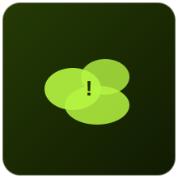
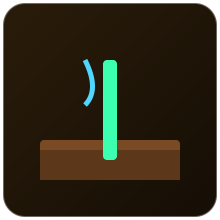
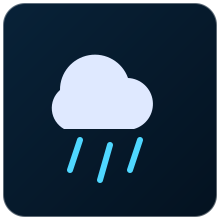
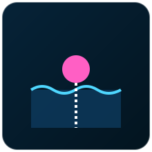

Sensores voltados ao monitoramento de condições ambientais e de processo: qualidade do ar, umidade do solo, chuva, nível de líquidos e vazão.
Nenhum sensor encontrado com esse filtro.

O MQ-2 é um sensor de gás de baixo custo capaz de detectar fumaça e gases combustíveis como GLP, propano, metano e hidrogênio.
Utiliza um elemento sensível de dióxido de estanho (SnO2), cuja condutividade elétrica aumenta na presença dos gases detectáveis. Essa mudança de condutividade é convertida em uma tensão analógica proporcional à concentração de gás no ar.
| Tensão de alimentação | 5V |
|---|---|
| Gases detectados | GLP, propano, metano, álcool, hidrogênio, fumaça |
| Faixa de detecção | 300 a 10000 ppm |
| Tempo de aquecimento | Necessita alguns minutos de pré-aquecimento |
Analógico (e digital via comparador embutido no módulo)
Em uma cozinha industrial, o MQ-2 conectado a um ESP32 dispara uma notificação via MQTT para o celular do responsável assim que a concentração de gás ultrapassa o limite de segurança configurado.
Winsen Electronics (fabricante original do elemento sensor), Módulos: diversos fabricantes chinesas (Hanwei/compatíveis)
O MQ-135 é um sensor voltado para o monitoramento da qualidade do ar, sensível a amônia, óxidos de nitrogênio, benzeno, fumaça e CO2, entre outros gases poluentes.
Assim como o MQ-2, baseia-se em um elemento de dióxido de estanho sensível a gases oxidantes/redutores. A resistência do elemento varia conforme a concentração de poluentes no ar, gerando uma tensão de saída proporcional que precisa de calibração para valores absolutos precisos.
| Tensão de alimentação | 5V |
|---|---|
| Gases detectados | NH3, NOx, benzeno, fumaça, CO2 (qualidade do ar) |
| Faixa de detecção | 10 a 1000 ppm (dependendo do gás) |
| Tempo de aquecimento | Necessita pré-aquecimento |
Analógico (e digital via comparador embutido no módulo)
Um Raspberry Pi lê continuamente o MQ-135 em um galpão industrial e aciona automaticamente exaustores quando a qualidade do ar cai abaixo do nível aceitável.
Winsen Electronics (fabricante original do elemento sensor), Módulos: diversos fabricantes chineses compatíveis

Sensor usado em agricultura inteligente (smart farming) para medir a umidade presente no solo, permitindo irrigação automatizada e mais eficiente.
Ao contrário dos sensores resistivos antigos, o modelo capacitivo mede a variação da constante dielétrica do solo em função da quantidade de água presente, sem eletrodos expostos em contato direto, o que reduz a corrosão e aumenta a vida útil do sensor.
| Tensão de alimentação | 3,3V a 5,5V |
|---|---|
| Saída | Analógica (0 a ~3V, invertida: menor tensão = mais úmido) |
| Vida útil | Maior que sensores resistivos por não sofrer corrosão eletroquímica |
| Aplicação | Inserido diretamente no solo |
Analógico
Ligado a uma entrada analógica do Arduino, o sensor aciona uma eletroválvula de irrigação automaticamente sempre que a leitura indica solo seco, economizando água em relação à irrigação por horário fixo.
Fabricante genérico amplamente replicado (padrão v1.2/v2.0), Distribuído por DFRobot, HiLetgo, Keyestudio

O FC-37 (também chamado de sensor de gotas de chuva) detecta a presença de água em sua placa sensora, sendo usado para identificar chuva ou vazamentos.
Possui uma placa com trilhas condutoras expostas. Quando gotas de água tocam a placa, elas formam um caminho de condução parcial entre as trilhas, reduzindo a resistência elétrica medida, o que é interpretado tanto de forma digital (limiar ajustável) quanto analógica (intensidade da chuva).
| Tensão de alimentação | 3,3V a 5V |
|---|---|
| Saída | Digital (com potenciômetro de ajuste) e analógica |
| Área sensora | Placa de trilhas expostas, precisa ficar ao ar livre |
| Uso típico | Detecção de chuva ou vazamento de água |
Analógico e Digital
Instalado na cobertura de uma área de carga e descarga, o FC-37 aciona automaticamente o fechamento de uma lona motorizada assim que detecta as primeiras gotas de chuva.
Fabricante genérico amplamente replicado, Distribuído por HiLetgo, Elegoo, Keyestudio

Sensor de nível do tipo boia (chave de nível) usado para detectar se o nível de um líquido está acima ou abaixo de um ponto de referência, muito comum em reservatórios industriais.
Uma boia magnética flutua sobre o líquido e se move ao longo de uma haste. Dentro da haste existe um reed switch (interruptor magnético) que muda de estado (aberto/fechado) quando o ímã da boia passa por perto, indicando se o nível está acima ou abaixo daquele ponto.
| Tensão de comutação | Depende do modelo, tipicamente até 100V/0,5A |
|---|---|
| Tipo de saída | Contato seco NA ou NF (reed switch) |
| Material | Geralmente PP ou PVC, resistente a líquidos diversos |
| Instalação | Vertical ou lateral, dependendo do modelo |
Digital (contato seco)
Uma boia de nível instalada na parte inferior de uma caixa d'água desliga automaticamente a bomba (via relé controlado por um CLP) assim que o nível fica muito baixo, evitando que a bomba funcione sem água.
Fabricante genérico amplamente replicado, Versões industriais equivalentes: Endress+Hauser, Gems Sensors
O YF-S201 é um sensor de vazão (fluxo) de água que mede a quantidade de líquido que passa por uma tubulação, muito usado em sistemas de irrigação e dosagem de água.
Internamente possui uma pequena turbina (rotor) que gira conforme a água passa por ela. Um sensor de efeito Hall detecta a rotação da turbina e gera pulsos elétricos cuja frequência é proporcional à vazão de água, permitindo calcular o volume total escoado.
| Tensão de alimentação | 5V a 24V |
|---|---|
| Faixa de vazão | 1 a 30 L/min |
| Saída | Pulsos digitais (frequência proporcional à vazão) |
| Fator de conversão típico | Aprox. 450 pulsos por litro |
Digital (pulsos por efeito Hall)
Instalado na tubulação de entrada de um tanque de mistura, o YF-S201 permite que um Arduino conte os pulsos e feche a válvula solenoide automaticamente ao atingir o volume programado.
Fabricante genérico amplamente replicado, Distribuído por DFRobot, HiLetgo, Keyestudio